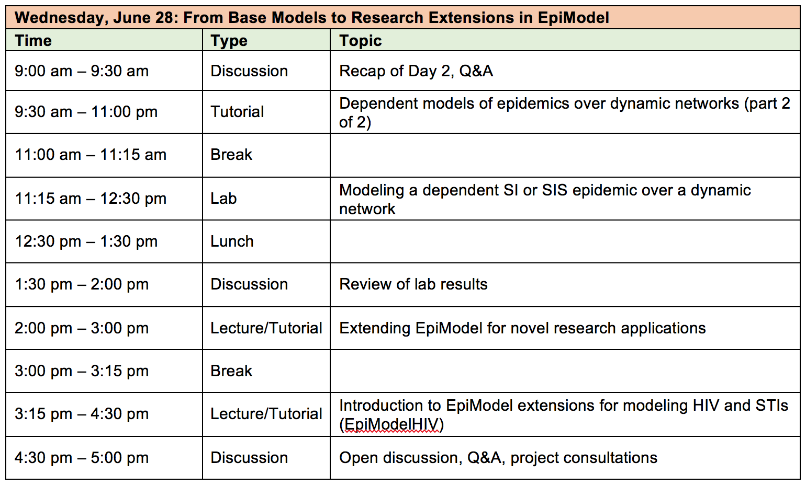
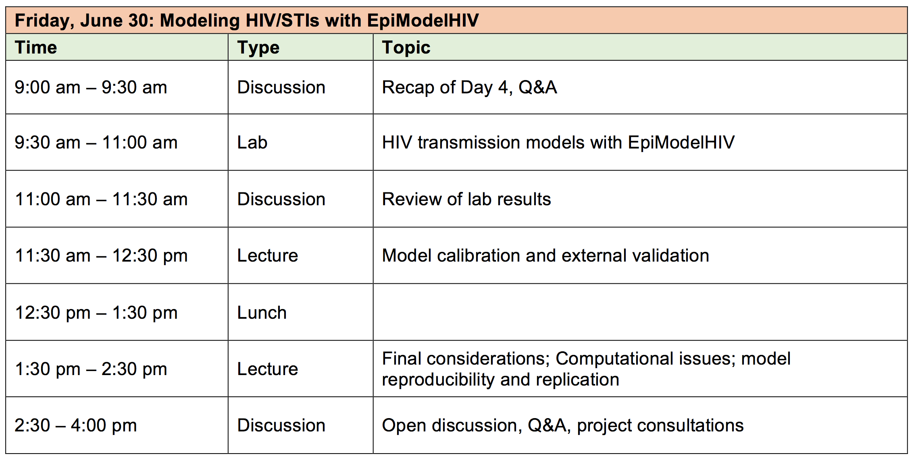

Network Models for HIV/STI Transmission Dynamics with EpiModel
Short Course @ Harvard SPH
 These materials are for the short course, Network Models for HIV/STI Transmission Dynamics with EpiModel, at the Harvard School of Public Health, June 26-30, 2017. This course is sponsored by the Prevention Policy Modeling Group at the T.H. Chan Harvard School of Public Health.
These materials are for the short course, Network Models for HIV/STI Transmission Dynamics with EpiModel, at the Harvard School of Public Health, June 26-30, 2017. This course is sponsored by the Prevention Policy Modeling Group at the T.H. Chan Harvard School of Public Health.
The instructors for the course are:
- Steven Goodreau, Professor of Anthropology, University of Washington
- Samuel Jenness, Assistant Professor of Epidemiology, Emory University
- Eli Rosenberg, Assistant Professor of Epidemiology, Emory University
This course introduces the statistical framework and software tools to model infectious disease epidemic dynamics over contact networks using the EpiModel software package for the R statistical software platform. This material is based on the Network Modeling for Epidemics course at the University of Washington, co-developed and offered by Goodreau and Jenness along with Martina Morris. This current course will cover the primary NME materials in the first three days (Monday to Wednesday), and then shift towards the specific methods for modeling HIV/STI transmission dynamics among men who have sex with men (MSM) in our applied research.
Pre-Course Preparation
Our course materials below will feature a mix of lectures, computer tutorials, labs, and discussions. We have two homework assignments before the course starts: software installation and background reading.
Software Installation
To allow us to quickly move through the software material in Day 1, we ask that you install the necessary software, EpiModel, along with the dependent R packages from the Statnet project. Please have R, EpiModel, and its dependent packages installed before the workshop using the instructions below. If you have any questions about software installation, please contact the course instructor, Sam, at sjennes@emory.edu before the course.
R and Rstudio
EpiModel runs on the R statistical software platform. The current version of R is 3.4.0; this version should be installed on your computer. It is available on CRAN.
The instructors will use Rstudio for the workshop. This is a popular front-end IDE (integrated development environment) for R, and is recommended if you are relatively new to R. It is available on the Rstudio website.
EpiModel
After installing R, you will need to install the EpiModel software package. With an open R console window, install EpiModel and its main related packages by typing the following.
install.packages("EpiModel", dependencies = TRUE)R may prompt you to select a mirror site. In addition to EpiModel itself, this step will also install or update the needed statnet software, including the ergm, tergm, network, and networkDynamic packages.
After installation, test that EpiModel can load correctly by typing:
library("EpiModel")Finally, check that the installed versions of EpiModel, ergm, tergm, network, and networkDynamic all match those listed below under “other attached packages”:
sessionInfo()## R version 3.4.0 (2017-04-21)
## Platform: x86_64-apple-darwin15.6.0 (64-bit)
## Running under: macOS Sierra 10.12.5
##
## Matrix products: default
## BLAS: /Library/Frameworks/R.framework/Versions/3.4/Resources/lib/libRblas.0.dylib
## LAPACK: /Library/Frameworks/R.framework/Versions/3.4/Resources/lib/libRlapack.dylib
##
## locale:
## [1] en_US.UTF-8/en_US.UTF-8/en_US.UTF-8/C/en_US.UTF-8/en_US.UTF-8
##
## attached base packages:
## [1] stats graphics grDevices utils datasets methods base
##
## other attached packages:
## [1] EpiModel_1.5.0 tergm_3.4.0 ergm_3.7.1
## [4] statnet.common_3.3.0 networkDynamic_0.9.0 network_1.13.0
## [7] deSolve_1.14
##
## loaded via a namespace (and not attached):
## [1] Rcpp_0.12.11 knitr_1.16 magrittr_1.5
## [4] MASS_7.3-47 doParallel_1.0.10 ape_4.1
## [7] lattice_0.20-35 foreach_1.4.3 stringr_1.2.0
## [10] tools_3.4.0 parallel_3.4.0 grid_3.4.0
## [13] nlme_3.1-131 lpSolve_5.6.13 coda_0.19-1
## [16] iterators_1.0.8 htmltools_0.3.6 lazyeval_0.2.0
## [19] yaml_2.1.14 rprojroot_1.2 digest_0.6.12
## [22] Matrix_1.2-10 RColorBrewer_1.1-2 codetools_0.2-15
## [25] trust_0.1-7 robustbase_0.92-7 evaluate_0.10.1
## [28] rmarkdown_1.6.0.9000 stringi_1.1.5 compiler_3.4.0
## [31] DEoptimR_1.0-8 backports_1.1.0Help and Tutorials
After loading the software, feel free to browse the help file documentation in advance of the workshop.
help(package = "EpiModel")
?EpiModelReadings
To guide discussion on the parameterization of our network-based models for HIV transmission among men who have sex with men (MSM), we ask that you read the following two papers in Lancet HIV and the Journal of Infectious Diseases before the course. We recommend that you also peruse the Supplementary Technical Appendices of at least one of the papers (you will see there is a good deal of overlap in the appendices between the two papers). In addition, you may be interested in reading through other related network analysis and modeling literature referenced below.
Required
Goodreau SM, Rosenberg ES, Jenness SM, Luisi N, Stansfield SE, Millett G, Sullivan P. Sources of Racial Disparities in HIV Prevalence among Men Who Have Sex with Men in Atlanta, GA: A Modeling Study. Lancet HIV. Epub ahead of print. DOI: 10.1016/ S2352-3018(17)30067. [PubMed] [Paper] [Appendix]
Jenness SM, Goodreau SM, Rosenberg E, Beylerian EN, Hoover KW, Smith DK, Sullivan P. Impact of CDC’s HIV Preexposure Prophylaxis Guidelines among MSM in the United States. Journal of Infectious Diseases. 2016; 214(12): 1800-1807. [PubMed] [Paper] [Appendix]
Optional
ERGM Statistical Methods
Hunter DR, Handcock MS, Butts CT, Goodreau SM, Morris M. ergm: A Package to Fit, Simulate and Diagnose Exponential-Family Models for Networks. J Stat Softw. 2008;24(3):nihpa54860. LINK
Krivitsky PN, Handcock MS, Morris M. Adjusting for network size and composition effects in exponential-family random graph models. Stat Methodol. 2011;8(4):319–339. LINK
Krivitsky PN, Handcock MS. A separable model for dynamic networks. J R Stat Soc Series B Stat Methodol. 2014;76(1):29–46. LINK
Applied HIV/STI Models with EpiModel
Jenness SM, Goodreau SM, Morris M, Cassels S. Effectiveness of Combination Packages for HIV-1 Prevention in Sub-Saharan Africa Depends on Partnership Network Structure. Sexually Transmitted Infections. 2016; 92(8): 619-624. LINK
Jenness SM, Sharma A, Goodreau SM, Rosenberg ES, Weiss KM, Hoover KW, Smith DK, Sullivan P. Individual HIV Risk versus Population Impact of Risk Compensation after HIV Preexposure Prophylaxis Initiation among Men Who Have Sex with Men. PLoS One. 2017; 12(1): e0169484. LINK
Jenness SM, Weiss KM, Goodreau SM, Rosenberg E, Gift T, Chesson H, Hoover KW, Smith DK, Liu AY, Sullivan P. Incidence of Gonorrhea and Chlamydia Following HIV Preexposure Prophylaxis among Men Who Have Sex with Men: A Modeling Study. Clinical Infectious Diseases. Epub ahead of print. DOI: 10.1093/cid/cix439. LINK
Applied HIV/STI using ERGMs (Same Methods, Pre-EpiModel)
Goodreau SM, Cassels S, Kasprzyk D, Montaño DE, Greek A, Morris M. Concurrent Partnerships, Acute Infection and HIV Epidemic Dynamics Among Young Adults in Zimbabwe. AIDS Behav. 2010;16(2):312–322. LINK
Eaton JW, Hallett TB, Garnett GP. Concurrent sexual partnerships and primary HIV infection: a critical interaction. AIDS Behav. 2011;15(4):687–692. LINK
Goodreau SM, Carnegie NB, Vittinghoff E, Lama JR, Sanchez J, Grinsztejn B, Koblin BA, Mayer KH, Buchbinder SP. What drives the US and Peruvian HIV epidemics in men who have sex with men (MSM)? PloS One. 2012;7(11):e50522. LINK
Goodreau SM, Carnegie NB, Vittinghoff E, Lama JR, Fuchs JD, Sanchez J, Buchbinder SP. Can male circumcision have an impact on the HIV epidemic in men who have sex with men? PLoS One. 2014;9(7):e102960. LINK
Carnegie NB, Goodreau SM, Liu A, Vittinghoff E, Sanchez J, Lama JR, Buchbinder S. Carnegie NB1, Goodreau SM, Liu A, Vittinghoff E, Sanchez J, Lama JR, Buchbinder S. J Acquir Immune Defic Syndr. 2015;69(1):119–25. LINK
Course Materials
Day 1: Statistical Models for Networks

Day 2: Modeling Epidemics on Networks

Slides
Tutorials
Independent Network Models
Dependent Network Models
Day 3: From Base Models to Research Extensions in EpiModel

Tutorials
Dependent Network Models
Extending EpiModel
Day 4: From HIV Model Concepts to Model Parameters to Model Code

Slides
Tutorials
Day 5: Modeling HIV/STIs with EpiModelHIV
